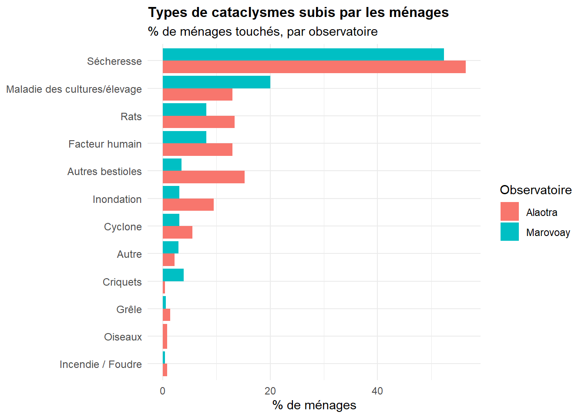
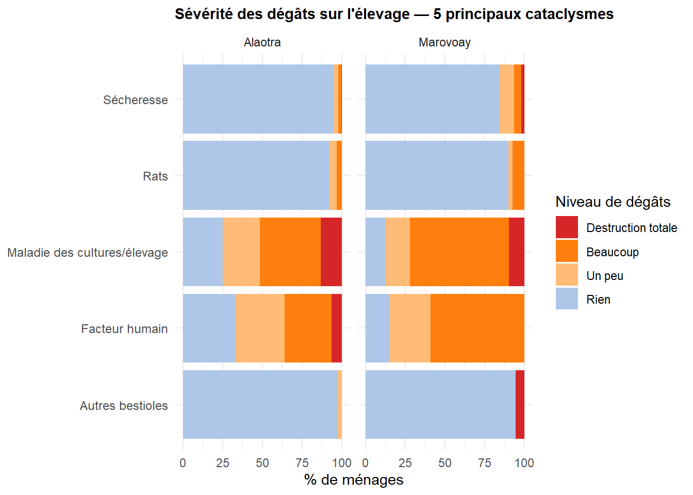
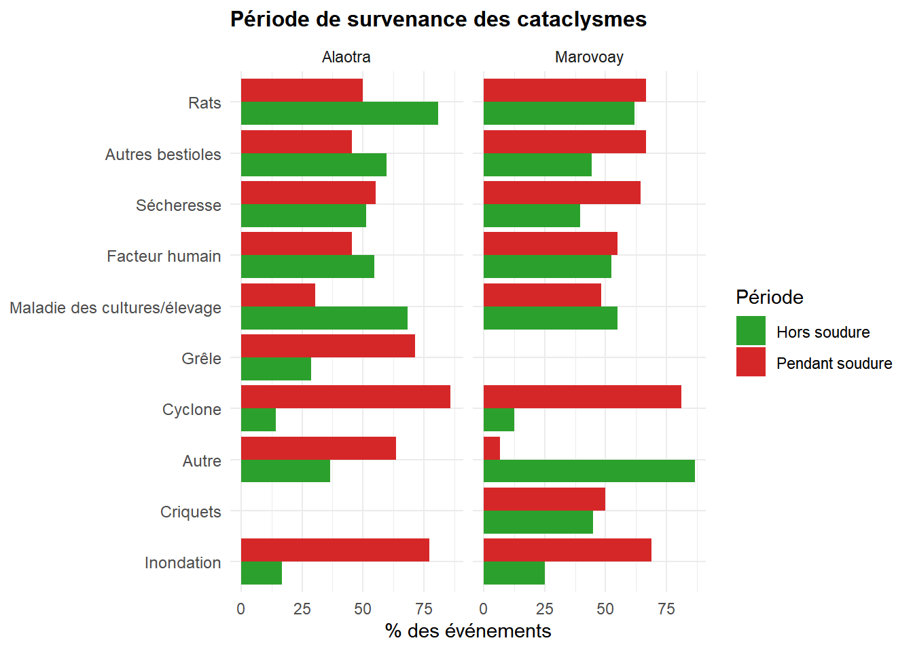
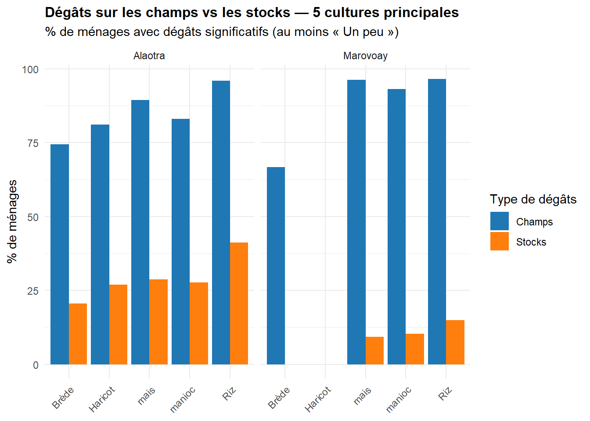

Les ménages ruraux de Madagascar sont régulièrement exposés à des aléas climatiques et biologiques : sécheresse, cyclones, inondations, invasions de criquets ou de rats, etc. Ce chapitre analyse la prévalence et la sévérité des cataclysmes subis par les ménages des observatoires d’Alaotra et de Marovoay au cours de la campagne 2025 (octobre 2024-septembre 2025).
Deux fichiers de données sont mobilisés :
res_cc : un enregistrement par ménage et par type de catastrophe, avec les dégâts sur le logement, l’élevage et les personnes ;
res_cca : les dégâts agricoles détaillés par culture et par type d’aléa (champs et stocks).
WarningTravail de vérification en cours
Les résultats présentés ci-dessous sont provisoires, et sont susceptibles de faire l’objet de corrections.
Code
options(encoding ="UTF-8")library(tidyverse)library(haven)library(gt)source("utils/helpers_report.R")source("utils/sites.R")source("utils/downloadable_output.R")# Données observatoiresres_deb <-read_dta("data/res_deb.dta")# Données cataclysmes (ménage × type)res_cc <-read_dta("data/res_cc.dta")# Données dégâts agricoles (ménage × culture)res_cca <-read_dta("data/res_cca.dta")# Préparer les variables d'observatoire et de hameaures_deb <- res_deb %>%mutate(Observatory =case_when( j0 ==3~"Marovoay", j0 ==21~"Alaotra",TRUE~as.character(j0) ),j4bis =case_when(str_starts(str_to_lower(j4), "bepako") ~"Bepako",str_starts(str_to_lower(j4), "ampijoroa") ~"Ampijoroa",str_starts(str_to_lower(j4), "maroala") ~"Maroala",str_starts(str_to_lower(j4), "madiromiongana") ~"Madiromiongana",TRUE~ j4 ) )res_deb <-assign_site(res_deb)# Harmoniser les labels des types de cataclysmes (nettoyage des doublons de saisie)res_cc <- res_cc %>%mutate(cc1_a_clean =case_when(str_to_lower(cc1_a) %in%c("afo / varatra", "afo/varatra") ~"Afo / Varatra",str_to_lower(cc1_a) %in%c("hafa", "") ~"Hafa",str_to_lower(cc1_a) =="misy voahitsaka"~"Olona",str_to_lower(cc1_a) =="olona (halatra fanim"~"Olona",str_to_lower(cc1_a) =="andiam-biby"~"Bibikely hafa",TRUE~ cc1_a ) )# Labels en français pour les types de cataclysmescata_labels <-c("Haintany"="Sécheresse","Tondra-drano"="Inondation","Rivo-doza"="Cyclone","Havandra"="Grêle","Valan'aretina"="Maladie des cultures/élevage","Valala"="Criquets","Voalavo"="Rats","Bibikely hafa"="Autres bestioles","Vorona"="Oiseaux","Afo / Varatra"="Incendie / Foudre","Olona"="Facteur humain","Hafa"="Autre")res_cc <- res_cc %>%mutate(Catastrophe =if_else( cc1_a_clean %in%names(cata_labels), cata_labels[cc1_a_clean], cc1_a_clean ) )# Filtrer les événements survenusevents <- res_cc %>%filter(cc11 ==1)# --- Préparation pour les variantes téléchargeables ---n_hh_site <- res_deb %>%count(Observatory, Site, name ="n_hh_site")n_hh_obs <- res_deb %>%count(Observatory, name ="n_hh_obs")hh_cata <- res_deb %>%select(j5, Observatory, Site, j4bis) %>%left_join( events %>%group_by(j5) %>%summarise(nb_events =n(), .groups ="drop"),by ="j5" ) %>%mutate(nb_events =replace_na(nb_events, 0), touched = nb_events >0)events_full <- events %>%left_join(res_deb %>%select(j5, Observatory, Site, j4bis), by ="j5") %>%left_join(n_hh_site, by =c("Observatory", "Site")) %>%left_join(n_hh_obs, by ="Observatory")cca_full <- res_cca %>%left_join(res_deb %>%select(j5, Observatory, Site), by ="j5")
9.1 Prévalence des cataclysmes
9.1.1 Taux d’exposition global
Quelle part des ménages enquêtés ont été touchés par au moins une catastrophe au cours de la campagne ?
Code
# T1 : % de ménages touchés par au moins une catastrophe, par observatoiremenages_touches <- events %>%left_join(res_deb, by ="j5") %>%group_by(Observatory) %>%summarise(n_touches =n_distinct(j5), .groups ="drop") %>%left_join( res_deb %>%count(Observatory, name ="n_total"),by ="Observatory" ) %>%mutate(pct =round(n_touches / n_total *100, 1) )# Ajouter une ligne "Ensemble"menages_touches_all <- menages_touches %>%summarise(Observatory ="Ensemble",n_touches =sum(n_touches),n_total =sum(n_total),pct =round(n_touches / n_total *100, 1) ) %>%bind_rows(menages_touches, .)menages_touches_all %>%gt() %>%tab_header(title ="Ménages ayant subi au moins une catastrophe" ) %>%cols_label(Observatory ="Observatoire",n_touches ="Ménages touchés",n_total ="Total ménages",pct ="% touchés" ) %>%fmt_number(columns = pct, decimals =1) %>%tab_style(style =cell_text(weight ="bold"),locations =cells_column_labels() ) %>%tab_style(style =list(cell_text(weight ="bold"), cell_fill(color ="#F0F0F0")),locations =cells_body(rows = Observatory =="Ensemble") )
La sécheresse est de loin le Catastrophe le plus fréquemment cité, suivi des maladies (cultures/élevage), des rats et des facteurs humains (vol, dégradation). Les cyclones et inondations ont touché un nombre plus limité de ménages dans ces deux observatoires pour cette campagne.
Code
# G1 : Barres horizontales — types de cataclysmes les plus fréquentsprev_type %>%ggplot(aes(x =reorder(Catastrophe, pct), y = pct, fill = Observatory)) +geom_col(position ="dodge") +coord_flip() +labs(title ="Types de cataclysmes subis par les ménages",subtitle ="% de ménages touchés, par observatoire",x =NULL,y ="% de ménages",fill ="Observatoire" ) +theme_minimal() +theme(plot.title =element_text(face ="bold", size =12),axis.text.y =element_text(size =9) )

Code
dl_fig_variants("fig_cata_prevalence_type", "11", function(d) { prev <- d %>%group_by(Observatory, Catastrophe) %>%summarise(n =n_distinct(j5),n_total =if_else(grepl("- Tous$", first(Observatory)),first(n_hh_obs), first(n_hh_site) ),.groups ="drop" ) %>%mutate(pct =round(n / n_total *100, 1))ggplot(prev, aes(x =reorder(Catastrophe, pct), y = pct, fill = Observatory)) +geom_col(position ="dodge") +coord_flip() +labs(x =NULL, y ="% de ménages", fill ="Observatoire",title ="Types de cataclysmes subis par les ménages") +theme_minimal() +theme(plot.title =element_text(face ="bold", size =12),axis.text.y =element_text(size =9))}, events_full, width =10, height =6)
Un ménage peut être touché par plusieurs types de catastrophes au cours de la même campagne. Le tableau suivant indique le nombre moyen de catastrophes subies.
Code
# T3 : Nombre moyen de catastrophes par ménage, par hameau et observatoirenb_cata <- events %>%group_by(j5) %>%summarise(nb_events =n(), .groups ="drop") %>%right_join(res_deb %>%select(j5, Observatory, j4bis), by ="j5") %>%mutate(nb_events =replace_na(nb_events, 0))nb_cata_hameau <- nb_cata %>%group_by(Observatory, j4bis) %>%summarise(n_hh =n(),mean_events =round(mean(nb_events), 1),.groups ="drop" )# Lignes "Ensemble"nb_cata_combined <- nb_cata_hameau %>%group_by(Observatory) %>%summarise(j4bis ="Ensemble",mean_events =round(weighted.mean(mean_events, n_hh), 1),n_hh =sum(n_hh),.groups ="drop" ) %>%bind_rows(nb_cata_hameau, .) %>%arrange(Observatory, j4bis =="Ensemble", j4bis)nb_cata_combined %>%gt(groupname_col ="Observatory") %>%tab_header(title ="Nombre moyen de catastrophes subies par ménage",subtitle ="Par hameau et observatoire" ) %>%cols_label(j4bis ="Hameau",n_hh ="Nb ménages",mean_events ="Nb moyen de catastrophes" ) %>%cols_hide(columns = n_hh) %>%tab_style(style =list(cell_text(weight ="bold"), cell_fill(color ="#F0F0F0")),locations =cells_body(rows = j4bis =="Ensemble") ) %>%tab_options(row_group.font.weight ="bold") %>%tab_style(style =cell_text(weight ="bold"),locations =cells_column_labels() )
Nombre moyen de catastrophes subies par ménage
Par hameau et observatoire
Hameau
Nb moyen de catastrophes
Alaotra
Ambatoharanana
1.3
Ambatomanga
0.9
Ambodivoara
1.4
Ambohidrony
1.0
Analamiranga
1.2
Avaradrano
1.7
Feramanga Atsimo
1.2
Mangabe
1.5
Ensemble
1.3
Marovoay
Ampijoroa
0.7
Bepako
0.9
Madiromiongana
1.5
Maroala
1.1
Ensemble
1.0
Code
dl_tbl_variants("tbl_cata_nb_moyen", "11", function(d) { d %>%group_by(Observatory) %>%summarise(`Nb ménages`=n(),`Nb moyen de catastrophes`=round(mean(nb_events), 1),.groups ="drop" )}, hh_cata)
Au-delà de la simple survenance, il est essentiel d’évaluer l’ampleur des dégâts causés. Trois domaines sont documentés : le logement, l’élevage et les conséquences sur les personnes du ménage.
Les niveaux de dégâts sont codés ainsi :
Logement et élevage : 1 = Rien, 2 = Un peu, 3 = Beaucoup (plus de la moitié), 4 = Destruction totale
Personnes : 1 = Aucun, 2 = Blessure/Maladie, 3 = Décès/Porté disparu, 4 = Manque de vivres
9.2.1 Dégâts sur le logement
Code
# T4 : Gravité des dégâts sur le logement par type de Catastrophe et observatoiredegats_labels <-c("1"="Rien", "2"="Un peu","3"="Beaucoup", "4"="Destruction totale")degats_logement <- events %>%left_join(res_deb, by ="j5") %>%filter(!is.na(cc1a1)) %>%mutate(Niveau = degats_labels[as.character(cc1a1)]) %>%count(Observatory, Catastrophe, Niveau) %>%group_by(Observatory, Catastrophe) %>%mutate(pct =round(n /sum(n) *100, 1)) %>%ungroup() %>%filter(Niveau !="Rien") %>%arrange(Observatory, Catastrophe, desc(pct))# Résumé : % de dégâts significatifs (Un peu + Beaucoup + Destruction)degats_logement_resume <- events %>%left_join(res_deb, by ="j5") %>%filter(!is.na(cc1a1)) %>%group_by(Observatory, Catastrophe) %>%summarise(n_total =n(),n_degats =sum(cc1a1 >=2, na.rm =TRUE),pct_degats =round(n_degats / n_total *100, 1),.groups ="drop" ) %>%filter(n_total >=5) %>%arrange(Observatory, desc(pct_degats))degats_logement_resume %>%pivot_wider(names_from = Observatory,values_from =c(n_total, n_degats, pct_degats),names_glue ="{Observatory}_{.value}",values_fill =0 ) %>%gt() %>%tab_header(title ="Dégâts sur le logement par type de catastrophe",subtitle ="% de ménages ayant subi des dégâts (au moins « Un peu »), parmi ceux touchés" ) %>%tab_spanner(label ="Alaotra", columns =starts_with("Alaotra")) %>%tab_spanner(label ="Marovoay", columns =starts_with("Marovoay")) %>%cols_label(Catastrophe ="Catastrophe",Alaotra_n_total ="N", Alaotra_n_degats ="Dégâts", Alaotra_pct_degats ="%",Marovoay_n_total ="N", Marovoay_n_degats ="Dégâts", Marovoay_pct_degats ="%" ) %>%tab_style(style =cell_text(weight ="bold"),locations =list(cells_column_labels(), cells_column_spanners()) )
Dégâts sur le logement par type de catastrophe
% de ménages ayant subi des dégâts (au moins « Un peu »), parmi ceux touchés
Les dégâts sur l’élevage sont particulièrement importants pour certains aléas : les maladies et la sécheresse peuvent entraîner des pertes significatives (catégorie « Beaucoup » ou « Destruction totale »).
9.2.3 Conséquences sur les personnes
Code
# T6 : Conséquences sur les personnes par type et observatoirepersonnes_labels <-c("1"="Aucun", "2"="Blessure/Maladie","3"="Décès/Disparu", "4"="Manque de vivres")degats_personnes <- events %>%left_join(res_deb, by ="j5") %>%filter(!is.na(cc1a4)) %>%mutate(Conséquence = personnes_labels[as.character(cc1a4)]) %>%count(Observatory, Catastrophe, Conséquence) %>%group_by(Observatory, Catastrophe) %>%mutate(pct =round(n /sum(n) *100, 1),total =sum(n) ) %>%ungroup() %>%filter(total >=5) %>%select(-n, -total) %>%pivot_wider(names_from = Conséquence, values_from = pct, values_fill =0) %>%arrange(Observatory, desc(Aucun))degats_personnes %>%gt(groupname_col ="Observatory") %>%tab_header(title ="Conséquences des cataclysmes sur les personnes du ménage",subtitle ="Distribution en % par type de Catastrophe" ) %>%cols_label(Catastrophe ="Catastrophe") %>%tab_style(style =cell_text(weight ="bold"),locations =cells_column_labels() ) %>%tab_options(row_group.font.weight ="bold")
Conséquences des cataclysmes sur les personnes du ménage
La conséquence la plus répandue est le manque de vivres, directement lié aux pertes agricoles. Les décès et disparitions, bien que rares, sont signalés pour certains cataclysmes (inondations, cyclones).
9.2.4 Profil de sévérité des principaux cataclysmes
Code
# G2 : Barres empilées — sévérité des dégâts pour les 5 cataclysmes les plus fréquentstop5_cata <- events %>%count(Catastrophe, sort =TRUE) %>%slice_head(n =5) %>%pull(Catastrophe)# Dégâts élevage pour les top 5severite_plot <- events %>%left_join(res_deb, by ="j5") %>%filter(Catastrophe %in% top5_cata, !is.na(cc1a3)) %>%mutate(Niveau =factor( degats_labels[as.character(cc1a3)],levels =c("Destruction totale", "Beaucoup", "Un peu", "Rien") ) ) %>%count(Observatory, Catastrophe, Niveau) %>%group_by(Observatory, Catastrophe) %>%mutate(pct =round(n /sum(n) *100, 1)) %>%ungroup()ggplot(severite_plot, aes(x = Catastrophe, y = pct, fill = Niveau)) +geom_col(position ="stack") +facet_wrap(~Observatory) +coord_flip() +labs(title ="Sévérité des dégâts sur l'élevage — 5 principaux cataclysmes",x =NULL,y ="% de ménages",fill ="Niveau de dégâts" ) +scale_fill_manual(values =c("Destruction totale"="#d62728", "Beaucoup"="#ff7f0e","Un peu"="#ffbb78", "Rien"="#aec7e8" )) +theme_minimal() +theme(plot.title =element_text(face ="bold", size =11),axis.text.y =element_text(size =9) )

9.3 Saisonnalité des cataclysmes
Les événements peuvent survenir en période de soudure (lorsque les stocks sont déjà bas) ou hors soudure. La coïncidence avec la soudure aggrave considérablement l’impact sur la sécurité alimentaire.
Code
# T7 : Période de survenance par type de catastrophe et observatoiresaisonnalite <- events %>%left_join(res_deb, by ="j5") %>%mutate(hors_soudure =if_else(!is.na(cc1a5_1) & cc1a5_1 ==1, 1L, 0L),pendant_soudure =if_else(!is.na(cc1a5_2) & cc1a5_2 ==1, 1L, 0L) ) %>%group_by(Observatory, Catastrophe) %>%summarise(n =n(),pct_hors =round(sum(hors_soudure) /n() *100, 1),pct_pendant =round(sum(pendant_soudure) /n() *100, 1),.groups ="drop" ) %>%filter(n >=5) %>%arrange(Observatory, desc(n))saisonnalite %>%gt(groupname_col ="Observatory") %>%tab_header(title ="Saisonnalité des cataclysmes",subtitle ="% d'événements survenus hors soudure et pendant la soudure" ) %>%cols_label(Catastrophe ="Catastrophe",n ="Nb événements",pct_hors ="% hors soudure",pct_pendant ="% pendant soudure" ) %>%tab_style(style =cell_text(weight ="bold"),locations =cells_column_labels() ) %>%tab_options(row_group.font.weight ="bold") %>%tab_footnote(footnote ="Un même événement peut être déclaré aux deux périodes",locations =cells_title(groups ="subtitle") )
Saisonnalité des cataclysmes
% d'événements survenus hors soudure et pendant la soudure1
Catastrophe
Nb événements
% hors soudure
% pendant soudure
Alaotra
Sécheresse
286
51.4
55.2
Autres bestioles
77
59.7
45.5
Rats
68
80.9
50.0
Facteur humain
66
54.5
45.5
Maladie des cultures/élevage
66
68.2
30.3
Inondation
48
16.7
77.1
Cyclone
28
14.3
85.7
Autre
11
36.4
63.6
Grêle
7
28.6
71.4
Marovoay
Sécheresse
272
39.7
64.3
Maladie des cultures/élevage
104
54.8
48.1
Facteur humain
42
52.4
54.8
Rats
42
61.9
66.7
Criquets
20
45.0
50.0
Autres bestioles
18
44.4
66.7
Cyclone
16
12.5
81.2
Inondation
16
25.0
68.8
Autre
15
86.7
6.7
1 Un même événement peut être déclaré aux deux périodes
Code
# G3 : Barres groupées hors soudure vs pendant souduresaisonnalite_plot <- saisonnalite %>%pivot_longer(cols =c(pct_hors, pct_pendant),names_to ="Période",values_to ="pct" ) %>%mutate( Période =if_else(Période =="pct_hors", "Hors soudure", "Pendant soudure") )ggplot(saisonnalite_plot, aes(x =reorder(Catastrophe, pct), y = pct, fill = Période)) +geom_col(position ="dodge") +facet_wrap(~Observatory) +coord_flip() +labs(title ="Période de survenance des cataclysmes",x =NULL,y ="% des événements",fill ="Période" ) +scale_fill_manual(values =c("Hors soudure"="#2ca02c", "Pendant soudure"="#d62728")) +theme_minimal() +theme(plot.title =element_text(face ="bold", size =12),axis.text.y =element_text(size =9) )

La majorité des cataclysmes surviennent pendant la période de soudure, ce qui amplifie leur impact sur la sécurité alimentaire des ménages. La sécheresse et les maladies, notamment, frappent souvent lorsque les stocks sont déjà au plus bas.
9.4 Dégâts agricoles par culture
Le fichier res_cca détaille les dégâts subis par chaque culture, en distinguant les pertes sur les champs (en cours de croissance) et sur les stocks (après récolte). Cette information est cruciale pour évaluer l’impact réel sur la production alimentaire.
9.4.1 Cultures les plus touchées
Code
# T8 : Top 10 des cultures les plus touchées par observatoire# Construire un vecteur de labels pour les culturesculture_labels_vec <-attr(res_cca$cc1a0, "labels")culture_labels <-setNames(names(culture_labels_vec), as.character(culture_labels_vec))cultures_touchees <- res_cca %>%left_join(res_deb, by ="j5") %>%filter(!is.na(cc1a0) & cc1a0 !=0) %>%mutate(Culture =if_else(as.character(cc1a0) %in%names(culture_labels), culture_labels[as.character(cc1a0)],paste("Code", cc1a0) ),# Nettoyer l'encodageCulture =iconv(Culture, from ="latin1", to ="UTF-8") ) %>%count(Observatory, Culture, sort =TRUE) %>%group_by(Observatory) %>%mutate(pct =round(n /sum(n) *100, 1),rang =row_number() ) %>%filter(rang <=10) %>%ungroup() %>%select(-rang)cultures_touchees %>%gt(groupname_col ="Observatory") %>%tab_header(title ="Top 10 des cultures les plus touchées par observatoire",subtitle ="Nombre de ménages déclarant des dégâts sur la culture" ) %>%cols_label(Culture ="Culture", n ="Nb ménages", pct ="%") %>%fmt_number(columns = pct, decimals =1) %>%tab_style(style =cell_text(weight ="bold"),locations =cells_column_labels() ) %>%tab_options(row_group.font.weight ="bold")
Top 10 des cultures les plus touchées par observatoire
Nombre de ménages déclarant des dégâts sur la culture
Culture
Nb ménages
%
Marovoay
Riz
254
66.7
mais
54
14.2
manioc
29
7.6
arachide
11
2.9
Banane
6
1.6
cane à sucre
5
1.3
Black Eyes
4
1.0
Courge
4
1.0
Brède
3
0.8
Concombre
3
0.8
Alaotra
Riz
245
33.9
Haricot
122
16.9
mais
66
9.1
manioc
47
6.5
Brède
39
5.4
Haricot vert
34
4.7
Concombre
17
2.4
arachide
13
1.8
Carotte
12
1.7
Mangue
12
1.7
Le riz, culture vivrière dominante, est de loin la culture la plus exposée aux cataclysmes. Le haricot, le maïs et le manioc figurent également parmi les cultures les plus touchées.
9.4.2 Dégâts sur les champs de riz par type de catastrophe
Code
# T9 : Gravité des dégâts sur les champs pour le riz (cc1a0 == 101)# Variables cc1a5_01 à cc1a5_13 = dégâts champs par type de catastrophecata_champs_labels <-c("cc1a5_01"="Cyclone", "cc1a5_02"="Inondation", "cc1a5_03"="Sécheresse","cc1a5_04"="Grêle", "cc1a5_05"="Maladie", "cc1a5_06"="Criquets","cc1a5_07"="Incendie/Foudre", "cc1a5_08"="Facteur humain","cc1a5_09"="Rats", "cc1a5_10"="Autres bestioles","cc1a5_12"="Oiseaux", "cc1a5_13"="Autres")riz_champs <- res_cca %>%left_join(res_deb, by ="j5") %>%filter(cc1a0 ==101) %>%select(Observatory, starts_with("cc1a5_")) %>%pivot_longer(cols =starts_with("cc1a5_"),names_to ="cata_var",values_to ="niveau" ) %>%filter(!is.na(niveau)) %>%mutate(Catastrophe = cata_champs_labels[cata_var],Niveau = degats_labels[as.character(niveau)] ) %>%count(Observatory, Catastrophe, Niveau) %>%group_by(Observatory, Catastrophe) %>%mutate(pct =round(n /sum(n) *100, 1),total =sum(n) ) %>%ungroup() %>%filter(total >=5) %>%select(-n, -total) %>%pivot_wider(names_from = Niveau, values_from = pct, values_fill =0)riz_champs %>%gt(groupname_col ="Observatory") %>%tab_header(title ="Dégâts sur les champs de riz par type de catastrophe",subtitle ="Distribution en % du niveau de dégâts (parmi les ménages riziculteurs ayant déclaré des dégâts)" ) %>%cols_label(Catastrophe ="Type d'aléa") %>%tab_style(style =cell_text(weight ="bold"),locations =cells_column_labels() ) %>%tab_options(row_group.font.weight ="bold")
Dégâts sur les champs de riz par type de catastrophe
Distribution en % du niveau de dégâts (parmi les ménages riziculteurs ayant déclaré des dégâts)
Type d'aléa
Rien
Un peu
Beaucoup
Destruction totale
Alaotra
Autres
80.0
20.0
0.0
0.0
Autres bestioles
71.2
13.5
13.5
1.9
Cyclone
10.0
70.0
20.0
0.0
Facteur humain
94.3
2.9
2.9
0.0
Grêle
0.0
22.2
77.8
0.0
Inondation
2.6
43.6
46.2
7.7
Maladie
87.5
8.3
4.2
0.0
Rats
29.3
58.5
12.2
0.0
Sécheresse
5.4
23.0
58.6
13.1
Marovoay
Autres
0.0
0.0
84.6
15.4
Autres bestioles
46.2
23.1
30.8
0.0
Criquets
11.8
70.6
17.6
0.0
Cyclone
75.0
25.0
0.0
0.0
Facteur humain
73.1
23.1
3.8
0.0
Inondation
20.0
40.0
40.0
0.0
Maladie
90.5
0.0
9.5
0.0
Rats
5.7
71.4
22.9
0.0
Sécheresse
3.6
17.4
66.5
12.5
9.4.3 Dégâts sur les stocks de riz par type de catastrophe
Code
# T10 : Gravité des dégâts sur les stocks pour le rizcata_stocks_labels <-c("cc1a6_01"="Cyclone", "cc1a6_02"="Inondation", "cc1a6_03"="Sécheresse","cc1a6_04"="Grêle", "cc1a6_05"="Maladie", "cc1a6_06"="Criquets","cc1a6_07"="Incendie/Foudre", "cc1a6_08"="Facteur humain","cc1a6_09"="Rats", "cc1a6_10"="Autres bestioles","cc1a6_12"="Oiseaux", "cc1a6_13"="Autres")riz_stocks <- res_cca %>%left_join(res_deb, by ="j5") %>%filter(cc1a0 ==101) %>%select(Observatory, starts_with("cc1a6_")) %>%pivot_longer(cols =starts_with("cc1a6_"),names_to ="cata_var",values_to ="niveau" ) %>%filter(!is.na(niveau)) %>%mutate(Catastrophe = cata_stocks_labels[cata_var],Niveau = degats_labels[as.character(niveau)] ) %>%count(Observatory, Catastrophe, Niveau) %>%group_by(Observatory, Catastrophe) %>%mutate(pct =round(n /sum(n) *100, 1),total =sum(n) ) %>%ungroup() %>%filter(total >=5) %>%select(-n, -total) %>%pivot_wider(names_from = Niveau, values_from = pct, values_fill =0)riz_stocks %>%gt(groupname_col ="Observatory") %>%tab_header(title ="Dégâts sur les stocks de riz par type de catastrophe",subtitle ="Distribution en % du niveau de dégâts" ) %>%cols_label(Catastrophe ="Type d'aléa") %>%tab_style(style =cell_text(weight ="bold"),locations =cells_column_labels() ) %>%tab_options(row_group.font.weight ="bold")
Dégâts sur les stocks de riz par type de catastrophe
Distribution en % du niveau de dégâts
Type d'aléa
Rien
Beaucoup
Un peu
Destruction totale
Alaotra
Autres
100.0
0.0
0.0
0.0
Autres bestioles
88.2
3.9
7.8
0.0
Cyclone
66.7
11.1
22.2
0.0
Facteur humain
97.1
0.0
2.9
0.0
Grêle
25.0
62.5
12.5
0.0
Inondation
86.5
0.0
13.5
0.0
Maladie
95.7
4.3
0.0
0.0
Rats
82.5
7.5
10.0
0.0
Sécheresse
56.1
17.5
24.5
1.9
Marovoay
Autres
100.0
0.0
0.0
0.0
Autres bestioles
92.3
0.0
7.7
0.0
Criquets
100.0
0.0
0.0
0.0
Cyclone
100.0
0.0
0.0
0.0
Facteur humain
100.0
0.0
0.0
0.0
Inondation
90.0
0.0
10.0
0.0
Maladie
100.0
0.0
0.0
0.0
Rats
40.0
5.7
54.3
0.0
Sécheresse
93.3
3.1
3.6
0.0
Les dégâts sur les stocks, bien que moins fréquents que sur les champs, affectent directement les réserves alimentaires du ménage, en particulier lorsqu’ils surviennent en période de soudure.
9.4.4 Comparaison dégâts champs vs stocks pour les principales cultures
Code
# G4 : Comparaison dégâts champs vs stocks pour les 5 cultures principalestop5_cultures <- res_cca %>%filter(!is.na(cc1a0) & cc1a0 !=0) %>%count(cc1a0, sort =TRUE) %>%slice_head(n =5) %>%pull(cc1a0)# Calculer le % de ménages avec dégâts (niveau >= 2) sur champs et stockschamps_vs_stocks <- res_cca %>%left_join(res_deb, by ="j5") %>%filter(cc1a0 %in% top5_cultures) %>%mutate(Culture =iconv( culture_labels[as.character(cc1a0)],from ="latin1", to ="UTF-8" ) ) %>%rowwise() %>%mutate(any_champs =any(c_across(starts_with("cc1a5_")) >=2, na.rm =TRUE),any_stocks =any(c_across(starts_with("cc1a6_")) >=2, na.rm =TRUE) ) %>%ungroup() %>%group_by(Observatory, Culture) %>%summarise(n =n(),pct_champs =round(sum(any_champs) /n() *100, 1),pct_stocks =round(sum(any_stocks) /n() *100, 1),.groups ="drop" )champs_vs_stocks_plot <- champs_vs_stocks %>%pivot_longer(cols =c(pct_champs, pct_stocks),names_to ="Type",values_to ="pct" ) %>%mutate(Type =if_else(Type =="pct_champs", "Champs", "Stocks"))ggplot(champs_vs_stocks_plot, aes(x = Culture, y = pct, fill = Type)) +geom_col(position ="dodge") +facet_wrap(~Observatory) +labs(title ="Dégâts sur les champs vs les stocks — 5 cultures principales",subtitle ="% de ménages avec dégâts significatifs (au moins « Un peu »)",x =NULL,y ="% de ménages",fill ="Type de dégâts" ) +scale_fill_manual(values =c("Champs"="#1f77b4", "Stocks"="#ff7f0e")) +theme_minimal() +theme(axis.text.x =element_text(angle =45, hjust =1),plot.title =element_text(face ="bold", size =12) )

Les dégâts sur les champs (cultures en cours) sont systématiquement plus fréquents que les pertes de stocks. Toutefois, les pertes de stocks, même si elles concernent moins de ménages, ont un impact direct sur les réserves alimentaires disponibles.
9.5 Évolution de la prévalence des catastrophes (2003–2025)
Le module « catastrophes » (res_cc) est disponible depuis 2003. On retrace ici la proportion de ménages ayant déclaré au moins un aléa climatique ou biologique au cours de la campagne.